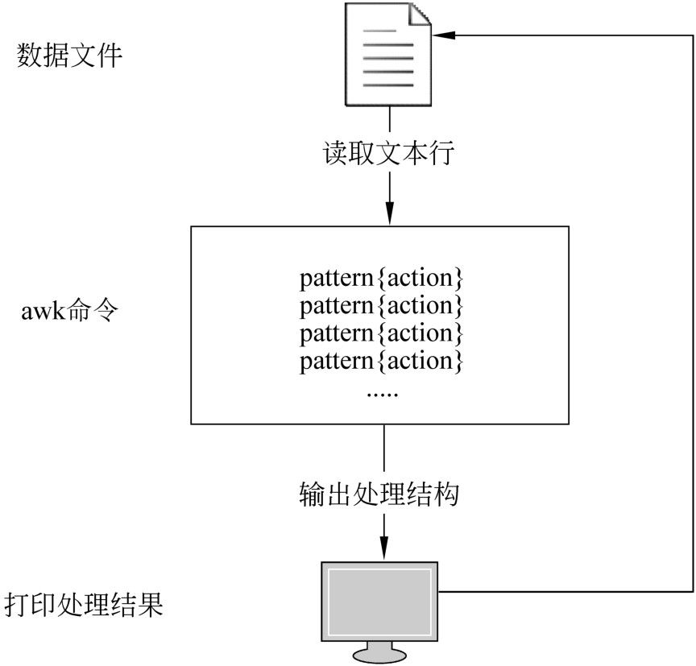

第11章
文本处理利器awk命令
上一章详细介绍了流编辑器sed命令。通过这个命令，用户可以非常方便地处理格式化的文本数据。与sed相比，awk的功能更为强大，甚至称它为一种程序设计语言也为不过。awk特别适合处理文本化的数据，它不仅仅是简单的字符串匹配，而是包含了变量、函数、表达式，以及流程控制等一系列的功能。因此，对于系统管理员来说，掌握好awk命令，可以更加方便地处理文本数据。本章将对awk进行详细介绍。
本章主要涉及的知识点如下所述。
- awk入门：主要介绍awk的功能、工作方式、基本语法，以及工作流程等。
- awk的模式匹配：主要介绍awk命令中的匹配模式，包括BEGIN模式、END模式、关系表达式、正则表达式，以及混合模式等。
- 变量：主要介绍awk程序中的变量的定义方法、常用的系统变量，以及使用系统变量获取记录和字段的值。
- 运算符和表达式：主要介绍各种运算符，包括算术运算符、赋值运算符、条件运算符、逻辑运算符，以及关系运算符等。
- 函数：主要介绍awk内置的常用字符串函数和算术函数。
- 数组：主要介绍数组的定义和引用方法，以及数组的遍历等。
- 流程控制：主要介绍awk中的if、while、do…while、break、continue、next，以及exit等流程控制语句的使用方法。
- awk程序的格式化输出：主要介绍awk程序中的输出语句，包括print及printf等。
- awk的程序与Shell的交互：主要介绍通过管道和system函数实现awk程序与Shell的交互。
11.1 awk入门
awk是一种非常强大的数据处理工具，其本身可以称为一种程序设计语言，因而具有其他程序设计语言所共同拥有的一些特征，例如变量、函数，以及表达式等。通过awk，用户可以编写一些非常实用的文本处理工具。本节将介绍awk的基础知识。
11.1.1 awk的功能
awk的名称来自于其三位开发者的名字的缩写，分别为阿尔佛雷德·艾侯（Alfred Aho）、彼得·杰·温伯格（Peter Jay Weinberger）和布莱恩·威尔森·柯林汉（Brian Wilson Kernighan）。awk大约在1977年开发完成，然后在1979年作为UNIX第7版的一部分发布。后来，awk衍生出许多版本，其中主要的有兼容POSIX标准的mawk，以及同时兼容POSIX和GNU标准的gawk。目前，在绝大部分的Linux发行版中，默认安装的是gawk，即GNU awk。
awk是Linux以及UNIX环境中现有的功能最强大的数据处理工具。简单地讲，awk是一种处理文本数据的编程语言。awk的设计使得它非常适合于处理由行和列组成的文本数据。而在Linux或者UNIX环境中，这种类型的数据是非常普遍的。
除此之外，awk还是一种编程语言环境，它提供了正则表达式的匹配、流程控制、运算符、表达式、变量，以及函数等一系列的程序设计语言所具备的特性。它从C语言等中获取了一些优秀的思想。awk程序可以读取文本文件，对数据进行排序，对其中的数值执行计算已经生成报表等。
 注意：在许多Linux发行版中，/bin/awk命令是/bin/gawk命令的符号链接。
注意：在许多Linux发行版中，/bin/awk命令是/bin/gawk命令的符号链接。
11.1.2 awk命令的基本语法
awk命令的基本语法如下：
在上面的语法中，pattern表示匹配模式，actions表示要执行的操作。以上语法表示当某个文本行符合pattern指定的匹配规则时，执行actions所执行的操作。在上面的语法中， pattern和actions都是可选的，但是两者必须保证至少有一个。如果省略匹配模式pattern，则表示对所有的文本行执行actions所表示的操作；如果省略actions，则表示将匹配成功的行输出到屏幕。
注意：actions前面的左大括号需与pattern位于同一行中。
awk命令的匹配模式非常灵活，可以是以下任意一种。
- 正则表达式：需要使用斜线将正则表达式包围起来。
- 关系表达式：例如x>34，判断变量x与34是否存在大于的关系。
- 模式1，模式2：指定一个行的范围。该语法不能包括BEGIN和END模式。
- BEGIN：让用户指定在第1行文本被处理之前所发生的操作，通常可在这里设置全局变量。
- END：让用户在最后1行文本被读取之后发生的操作。
关于awk的匹配模式，将在11.2节中详细介绍。
awk命令的操作由一个或者多个命令、函数或者表达式组成，它们之间由换行符或者分号隔开，并且位于大括号内。通常情况下，有以下4种操作：
- 变量或者数组赋值。
- 输出命令，例如printf或者print。
- 内置函数。
- 流程控制语句，例如if、while或者for等。
注意：awk命令的语法隐含一个条件结构，即如果符合匹配规则，则执行后面的操作。
11.1.3 awk的工作流程
对于初学者来说，搞清楚awk的工作流程非常重要。只有在掌握了awk的工作流程之后，才有可能用awk来处理数据。在awk处理数据时，它会反复执行以下4个步骤：
（1）自动从指定的数据文件中读取行文本。
（2）自动更新awk的内置系统变量的值，例如列数变量NF、行数变量NR、行变量$0，以及各个列变量$1、$2等。
（3）依次执行程序中所有的匹配模式及其操作。
（4）当执行完程序中所有的匹配模式及其操作之后，如果数据文件中仍然有末读取的数据行，则返回到第（1）步，重复执行（1）～（4）的操作。
awk命令的工作流程如图11-1所示。

图11-1 awk工作流程
注意：awk会自动逐行读取数据文件的所有文本行，无需用户自己来处理这个循环操作。
11.1.4 执行awk程序的几种方式
与上一章介绍的sed工具相似，用户也可以通过3种方式来执行awk程序，分别是命令行、awk脚本，以及可执行文件。当然，单独在命令行中使用awk命令的机会比较少，更多的是在Shell脚本中使用awk命令。
为了学习awk的使用方法，用户需要首先准备一个数据文件，其名称为scores.txt，内容如下：
在上面的内容中，第1列为学生姓名，后面4列为学生成绩。接下来，我们将以该文件为例，来介绍执行awk程序的几种方式。
1．通过命令行执行awk程序
在这种情况下，用户可以像执行其他Shell命令一样来执行awk程序，其语法如下：
在上面的语法中，program-text表示要执行的awk程序语句，必须使用单引号将其引用起来，以防止Shell解释该语句。datafile表示要处理的数据文件。
【例11-1】演示通过命令行执行awk程序的方法，具体命令如下：
在上面的命令中，awk的程序语句非常简单，在大括号中只有一条print语句，表示输出scores.txt文件中所有的文本行。
尽管这样非常方便，但是如果程序语句比较多的话，在命令行中直接输入是一件非常头疼的事情。因此，如果需要执行较长的awk语句，可以使用下面介绍的awk脚本。
2．执行awk脚本
在awk程序语句比较多的情况下，用户可以将所有的语句写在一个脚本文件中，然后通过awk命令来解释并执行其中的语句。awk调用脚本的语法如下：
在上面的语法中，-f选项表示从脚本文件中读取awk程序语句，program-file表示awk脚本文件名称，file表示要处理的数据文件。
【例11-2】演示编写并执行awk程序的方法，其中awk脚本代码如下：
上面的代码实际上是将【例11-1】中放在命令行中的程序写入到一个专门的脚本文件中。然后，用户就可以通过以下命令执行该脚本：
可以发现，【例11-2】的执行结果与【例11-1】完全相同。
注意：awk脚本中不能含有除awk语句之外的其他命令或者语句，例如Shell命令等。
3．可执行脚本文件
在上面介绍的两种方式中，用户都需要输入awk命令才能执行程序。除此之外，用户还可以通过类似于Shell脚本的方式来执行awk程序。在这种方式中，需要在awk程序中指定命令解释器，并且赋予脚本文件的可执行权限。其中指定命令解释器的语法如下：
以上语句必须位于脚本文件的第一行。然后用户就可以通过以下命令执行awk程序：
其中，awk-script为awk脚本文件名称，file为要处理的文本数据文件。
【例11-3】演示以可执行脚本文件的方式执行awk程序的方法，代码如下：
在上面的代码中，第2行指定解释器为/bin/awk，第5行为awk程序语句。
以上代码的执行结果如下；
在上面的命令中，第1个命令将执行权限赋予ex11-3.sh，第2个命令执行ex11-3.sh脚本文件。可以发现，【例11-3】的执行结果与前面两个例子完全相同。
11.2 awk的模式匹配
在awk中，匹配模式处于非常重要的地位，它决定着匹配模式后面的操作会影响到哪些文本行。awk中的匹配模式主要包括关系表达式、正则表达式、混合模式，BEGIN模式，以及END模式等，本节将对这些模式匹配进行详细地介绍。
11.2.1 关系表达式
awk提供了许多关系运算符，例如大于＞、小于＜或者等于==等，关于关系运算符的详细使用方法，将在11.4节中详细介绍。awk允许用户使用关系表达式作为匹配模式，当某个文本行满足关系表达式时，将会执行相应的操作。
【例11-4】演示如何使用关系表达式作为awk命令的匹配模式，代码如下：
在上面的代码中，第5行的awk语句中$2>80为关系表达式，表示第2列的成绩超过80分，其中变量$2为列变量，表示第2列的值。大括号中的print语句表示打印匹配成功的行。
该例的执行结果如下：
从上面的执行结果可以得知，第2列的值为79的文本行已经被过滤掉。
注意：变量$2为列变量，表示引用第2列的值。关于列变量的使用方法，将在11.3节中详细介绍。print为awk语句中的操作，表示将符合条件的行输出到屏幕。
11.2.2 正则表达式
awk支持以正则表达式作为匹配模式，与sed一样，用户需要将正则表达式放在两条斜线之间，其基本语法如下：
【例11-5】演示使用正则表达式作为匹配模式的方法，代码如下：
在上面的代码中，第5行的awk语句中的正则表达式为/^T/，表示筛选以字符T开头的文本行。
以上代码的执行结果如下：
【例11-6】使用更为复杂的正则表达式来充当匹配模式，代码如下：
其中，第5行的awk语句中的正则表达式为/^(Tom|Kon)/，表示匹配所有以Tom或者Kon开头的文本行。
以上代码的执行结果如下：
11.2.3 混合模式
awk不仅支持单个的关系表达式或者正则表达式作为模式，还支持使用逻辑运算符&&、||或者!将多个表达式组合起来作为一个模式。其中，&&表示逻辑与，||表示逻辑或，!表示逻辑非，关于这3个运算符的详细用法，将在11.4节中介绍。
【例11-7】演示awk命令中混合模式的使用方法，代码如下：
在上面的代码中，第5行的模式由一个正则表达式和一个关系表达式通过&&运算符连接起来，表示同时匹配以字符K开头以及第2列的值大于80的行。
以上代码的执行结果如下：
在scores.txt文件中，以字符K开头的一共有两行，其中一个文本行的第2列的值为79，而另外一行的第2列的值为88。通过上面的执行结果，可以发现，【例11-7】只输出了第2列的值为88的一行，这意味着代码第5行中的混合模式已经生效。
注意：awk的混合模式可以将正则表达式和关系表达式混合在一起使用，而不仅仅是单纯使用正则表达式或者关系表达式。
11.2.4 区间模式
awk还支持一种区间模式，也就是说通过模式可以匹配一段连续的文本行。区间模式的语法如下：
其中，pattern1和pattern2都是前面所讲的匹配模式，可以是关系表达式，也可以是正则表达式等。当然，也可以是这些模式的混合形式。
【例11-8】在awk命令中使用区间模式匹配一段连续的文本行，代码如下：
在上面的代码中，第5行的awk语句中使用了区间模式来匹配文本行，其中第1个模式为正则表达式，表示匹配以Nancy开头的文本行。第2个模式为关系表达式，表示第2列的值为92的文本行。因此，上面的代码输出包含匹配前后两个模式在内的文本行之间的所有的行。
以上代码的执行结果如下：
注意：在使用区间模式时，一定要注意前后的边界。如果有多个行符合匹配模式，则awk会匹配第一次符合要求的行。
11.2.5 BEGIN模式
BEGIN模式是一种特殊的内置模式，其成立的时机为awk程序刚开始执行，但是又尚未读取任何数据之前。因此，该模式所对应的操作仅仅被执行一次，当awk读取数据之后， BEGIN模式便不再成立。所以，用户可以将与数据文件无关，而且在整个程序的生命周期中，只需执行一次的代码放在BEGIN模式对应的操作中。
【例11-9】演示awk命令中BEGIN模式的使用方法，代码如下：
在上面的代码中，第2行指定命令解释器为awk，第5行指定模式为BEGIN，其所对应的操作为print语句。
以上代码的执行结果如下：
对于【例11-9】，有几点需要特别指出。首先，【例11-9】是通过可执行脚本文件执行awk程序的；其次，awk程序中只包含BEGIN模式，在这种情况下，awk不需要读取任何数据行，因此，我们并没有指定数据文件。
通常情况下，用户可以将一些初始化的操作放在BEGIN模式的操作中，例如自定义列分隔符、行分隔符，以及初始化变量等，如下面的例子所示。
【例11-10】在BEGIN模式中进行变量的初始化操作。代码如下：
在上面的代码中，第5行是BEGIN模式的开始，在大括号里面是一系列的操作，其中第6行指定列分隔符为制表符，第7行指定行分隔符为换行符，第8行定义了一个名称为count的变量，第9行输出一条信息。
以上代码的执行结果如下：
由于【例11-10】只有一条输出语句，所以只输出一行信息。
注意：对于只包含BEGIN模式的awk程序，awk不会打开任何数据文件。
11.2.6 END模式
END模式是awk的另外一种特殊模式，该模式成立的时机与BEGIN模式恰好相反，它是在awk命令处理完所有的数据，即将退出程序时成立，在此之前，END模式并不成立。无论数据文件中包含多少行数据，在整个程序的生命周期中，该模式所对应的操作只被执行一次。因此，一般情况下，用户可以将许多善后工作放在END模式对应的操作中。
【例11-11】演示awk程序中END模式的使用方法，代码如下：
在上面的代码中，第5～8行是BEGIN模式以及操作，用于数报表的头部。第11行输出报表数据。第14～17行是END模式及其操作，用于输出提示信息。
以上代码的执行结果如下：
11.3 变量
与其他程序设计语言一样，awk本身支持变量的相关操作，包括变量的定义和引用，以及参与相关的运算等。此外，还包含了许多内置的系统变量。本节将介绍awk中的变量的相关知识。
11.3.1 变量的定义和引用
变量是用来存储数据。变量由变量名和值两部分组成，其中变量名是用来实现变量值的引用的途径，而变量值则是内存空间中存储的用户数据。
awk的变量名只能包括字母、数字和下划线，并且不能以数字开头。例如abc、a_、_z及a123都是合法的变量名，而123abc则是非法的变量名。另外，awk的变量名是区分大小写的，因此，X和x分别表示不同的变量。
在awk中定义变量的方法非常简单，只要给出一个变量名并且赋予适当的值即可。awk中的变量类型分为两种，分别为字符串和数值。但是在定义awk变量时，无需指定变量类型，awk会根据变量所处的环境自动判断。如果没有指定值，数值类型的变量的默认值为0，字符串类型的变量的默认值为空串。
【例11-12】演示awk变量的定义、赋值，以及引用的方法。为了避免指定数据文件，本例的变量定义和赋值都在BEGIN模式中。代码如下：
在上面的代码中，第6行定义了变量x，并将数值3赋给变量x。第8行定义变量message，并将两个字符串连接后的结果赋给变量message。第10和第11行分别输出这两个变量的值。
该程序的执行结果如下：
11.3.2 系统内置变量
akw提供了许多非常实用的系统变量，例如字段变量、字段数变量，以及记录数变量等。表11-1列出了常用的系统变量。
表11-1 常用的awk系统变量
| 变 量 | 说 明 |
| $0 | 记录变量，表示当前正在处理的记录 |
| $n | 字段变量，其中n为整数，且n大于1。表示第n个字段的值 |
| NF | 整数值，表示当前记录（变量$0所代表的记录）的字段数 |
| NR | 整数值，表示awk已经读入的记录数 |
| FILENAM | 表示正在处理的数据文件的名称 |
| FS | 字段分隔字符，默认值是空格或者制表符 |
| RS | 记录分隔符，默认值是换行符 |
与关系型数据库相对应，awk所要处理的文件也是由许多记录（record）组成。所谓记录，是用来描述某个具体事物的各个方面的。而记录是由多个字段（field）组成，每个字段描述某个事物的一个具体的方面。在本章中，我们引入了记录和字段的概念，其主要原因在于尽管awk是逐行读取数据的，但是在处理数据时却是以记录为单位的，而且在某些情况下，记录可以跨越多行。因此，读者应该搞清楚文本行、记录，以及字段等概念的区别。
在表11-1中，变量$0表示awk正在处理的记录，该变量将整个记录作为一个字符串来处理。变量$n所表示的是当前记录的第n个字段的值，例如$1表示第1个字段的值，$2表示第2个字段的值，依此类推。
NF代表当前记录的字段数（number of field），在某些特殊情况下，数据文件的各条记录的字段数并不一定完全相同，所以对于所有的记录来说，该变量的值也不一定相同。NR代表awk已经读取的记录的数量。
FS是一个比较常用的变量，用来表示字段分隔符（field seperator）。其默认值为空格或者制表符，这也是最常见的分隔字段的方式。但是在某些情况下，例如在/etc/passwd文件中，字段的分隔符是冒号。为了处理这种情况，用户可以使用FS变量自定义当前数据文件的字段分隔符，awk会在处理数据文件之前参考该变量的值来分隔记录中的各个字段。
记录分隔符（record seperator）变量RS用来自定义数据文件中记录的分隔符。在默认情况下，awk会将换行符\n作为记录分隔符，因此，绝大部分的数据文件都是一行包含一条记录。但是，如果某些文件中的一条记录跨越多行，则不能使用默认的分隔符。此时，用户可以使用RS变量自定义记录分隔符。例如，可以将记录分隔符指定为空行。
注意：awk会在读取数据行之前通过FS及RS确定记录和字段的分隔符，然后进行记录和字段的分隔。每读取一条记录之后，变量$0以及$1、$2等变量都会自动更新。
11.3.3 记录分隔符和字段分隔符
对于文本形式的数据来说，记录和字段的分隔非常重要。因此，在本节中对于这两个分隔符专门进行介绍。
记录分隔符使用系统变量RS来指定，如果没有指定，则默认为换行符\n。在大多数的情况下，这种方式都是有效的，因为awk每次都是从数据文件中只读取一行数据进行处理。所以正常情况下，一行数据就代表一条记录。但是，这并不意味着总是这样，有些数据文件中用多行文本来描述一条记录，如下：
在上面的文件中，每条记录由作者及其发表的论文组成，首先是作者姓名，然后依次是所发表的论文的标题，每个字段都是独占一行。记录之间用空行隔开。
对于上面文件，如果使用默认的记录分隔符，则会将一条完整的记录拆分开来，如下面的例子所示。
【例11-13】使用默认的记录分隔符处理数据，代码如下：
在上面的代码中，第6行的作用是输出awk读取的数据行，第7行打印一行横线作为屏幕上记录之间的分隔线。
该程序的执行结果如下：
从上面的执行结果可以得知，【例11-13】将一条完整的记录拆分成了多条记录，即原本是字段的数据现在也作为记录来显示了，显然，这种结果并不是用户所希望看到的。
为了解决这个问题，用户可以根据数据文件的实际情况指定记录分隔符。在articles.txt文件中，记录分隔符为空行。下面的例子就通过指定记录分隔符，避免了记录分隔错误的问题。
【例11-14】本例通过自定义记录分隔符解决了【例11-13】中出现的问题，代码如下：
在上面的代码中，第6行定义记录分隔符为空串，此时，awk会将空白行作为记录分隔符。前面已经讲过，awk会在读取数据之前执行BEGIN模式所对应的操作，因此，把RS变量的定义放在BEGIN模式的操作中是最为恰当的。
该程序的执行结果如下：
从上面的执行结果可以得知，在指定列分隔符之后，程序已经正确处理文件中的记录了。
注意：当将记录分隔符指定为空字符串时，awk会将多个连续的空白行看做一个单一的记录分隔符，也就是说，awk不会再将空白行作为一条空白记录。另外，awk也会忽略文件开头和末尾处的空白行。
接下来再讨论一下字段分隔符。在默认情况下，awk会将空格或者制表符作为字段分隔符。但是，在某些情况下，例如在上面的articles.txt文件中，每一行为一个字段。因此，在处理这种类型的数据时，必须自己来指定字段分隔符。
【例11-15】演示如何通过自定义记录分隔符和字段分隔符来处理articles.txt文件，代码如下：
在上面的代码中，第6行指定记录分隔符为空字符串，第8行指定字段分隔符为换行符。第11行输出每条举例的第1个字段的值。
该程序的执行结果如下：
从上面的执行结果可以得知，程序已经正确输出了第1列的值。
11.3.4 记录和字段的引用
在awk中，用户可以使用系统变量来引用数据文件中的记录和字段。与关系型数据库不同，awk每次只是读取一行文本，因此，在awk程序中记录和字段的引用都是针对当前记录来说的。
变量$0表示正在读取的当前的记录，该变量将整个记录作为一个字符串来处理。因此，如果在程序中输出该变量的值。用户可以通过下面的例子来得到验证。
【例11-16】在awk脚本中引用当前记录，代码如下：
该程序的执行结果如下：
从上面的执行结果可以得知，变量$0的值正是当前的记录。
如果想单独引用某个具体的字段，可以使用系统变量$n来实现，如下面的例子所示。
【例11-17】演示如何通过系统变量来输出具体的字段，代码如下：
在上面的代码中，第6行输出第1个字段，以及第2～5个字段的和。
该程序的执行结果如下：
注意：对于用户来说，变量$0并不是只读的，用户可以自己把数据存储到$0变量中， awk仍然会自动分隔成多个字段。
11.4 运算符和表达式
awk是一种编程语言环境，因此，它也支持常用的运算符及表达式，例如算术运算、逻辑运算，以及关系运算等。本节将对awk所支持的常用的运算符及表达式进行介绍。
11.4.1 算术运算符
awk支持常用的算术运算，这一点与其他程序设计语言基本相同。如表11-2所示，列出了awk所支持的算术运算符。
表11-2 awk支持的算术运算符
| 运 算 符 | 说 明 | 举 例 |
| + | 加法运算 | 1+2表示计算1和2的和 |
| - | 减法运算 | 82-2表示计算82和2的差 |
| * | 乘法运算 | 2*5表示计算2和5的积 |
| / | 除法运算 | 6/3表示计算6和2的商 |
| % | 求模运算 | 5/2表示计算5除以2的余数 |
| ^ | 指数运算 | 2^3表示计算2的3次方 |
【例11-18】演示awk各种算术运算的操作，代码如下：
在上面的代码中，第6行计算表达式5除以2的商，第9行计算表达式5除以2的余数，第12行计算2的3次方。
该程序的执行结果如下：
在上面的执行结果中，第1行是5除以2的商，可以得知，awk支持浮点数。第2行是5除以2的余数，其值为1。第3行是2的3次方，其值为8。
11.4.2 赋值运算符
如表11-3所示，列出了awk中常用的赋值运算符。
表11-3 awk支持的赋值运算符
| 运 算 符 | 说 明 | 举 例 |
| = | 赋值运算 | x=5表示将数值5赋给变量x |
| += | 复合赋值运算，表示将前后两个数值相加后的和赋给前面的变量 | x+=5表示先将x的值与5相加，然后将和赋给变量x，等价于表达式x=x+5 |
| -= | 复合赋值运算，表示将前后两个数值相减后的查赋给前面的变量 | x-=5表示先将变量x的值减去5，然后将得到的差赋给变量x，等价于表达式x=x-5 |
| *= | 复合赋值运算，表示前后两个数值的乘积赋给前面的变量 | x*=5表示先将变量x的值乘以5，然后将得到的乘积赋给变量x |
| /= | 复合赋值运算，表示将前后两个数值的商赋给前面的变量 | x/=5表示先将变量x除以5，然后将得到的商赋给变量x |
| %= | 复合赋值运算，表示将前面的数值除以后面的数值所得的余数赋给前面的变量 | x%=5表示将变量x与5相除后的余数赋给变量x |
| ^= | 复合运算符，表示将前面的数值的后面数值次方赋给前面的变量 | x^=3表示将变量x的3次方赋给变量x |
在表11-3中，除了赋值运算符=之外，其他的都是复合赋值运算符，也就是先执行某个运算，然后将运算结果赋给前面的变量。
【例11-19】演示赋值运算符的使用方法，代码如下：
在上面的代码中，第6行是简单赋值语句，将整数值4赋给变量x。第9行是加法复合赋值运算，将变量x的值先加上10，然后赋给变量x，此时变量x的值为14。第12行是乘法复合赋值运算，先将变量x的值乘以2，然后赋给变量x，此时变量x的值为28。第15行是幂赋值复合运算，先计算变量x的2次方，然后将计算结果赋给变量x，最后变量x的值为784。
该程序的执行结果如下：
可以发现，上面程序的执行结果与前面分析的完全一致。
11.4.3 条件运算符
awk中的条件运算符只有一个，其语法如下：
这是一个三目运算符，当表达式expression的值为真时，返回值为value1；否则，返回值为value2。
【例11-20】演示条件运算符的使用方法，代码如下：
在上面的代码中，第6行中的条件运算符表示当第2个字段的值大于90时，变量grade的值为A；否则，变量grade的值为B。
该程序的执行结果如下：
11.4.4 逻辑运算符
awk支持3种逻辑运算，分别为逻辑与、逻辑或和逻辑非，如表11-4所示，列出了这3种运算的运算符。
表11-4 awk支持的逻辑运算符
| 运 算 符 | 说 明 | 举 例 |
| && | 逻辑与，当前后两个表达式的值全部为真时，其运算结果才为真，反之则为假 | 1>2&&3>2的值为假 |
| || | 逻辑或，前后两个表达式只要有一个为真，则其运算结果为真。当两个表达式的值都为假时，其运算结果才为假 | •1>2||3>2的值为真 |
| ! | 逻辑非，当表达式的值为真时，其运算结果为假；当表达式的值为假时，其运算结果为真 | !(1>2)的值为真 |
【例11-21】演示&&运算符的使用方法，代码如下：
在上面的代码中，第5行的匹配模式为第2～5个字段的值都大于80。
该程序的执行结果如下：
11.4.5 关系运算符
awk支持常用的关系运算符，例如大于、小于，以及等于等，如表11-5所示，列出了awk中常用的关系运算符。
表11-5 awk中的关系运算符
| 运算符 | 说 明 | 举 例 |
| > | 大于 | 5>2的值为真 |
| >= | 大于或者等于 | 8>=8的值为真 |
| < | 小于 | 8<12的值为假 |
| <= | 小于或者等于 | 4<=7的值为真 |
| == | 等于 | 8==8的值为真 |
| != | 不等于 | 1!=3的值为真 |
| ～ | 匹配运算符 | $1～/^T/表示匹配第1个字段以字符T开头的记录 |
| !～ | 不匹配运算符 | $1 !～/a/表示匹配第1个字段不含有字符a的记录 |
在表11-5中，匹配运算符～和不匹配运算符!～是awk所特有的关系运算符，其语法如下：
和
在上面的语法中，A表示一个字符串，B表示一个正则表达式。匹配运算符表示判断字符串A中是否含有符合正则表达式B所表达的子字符串；不匹配运算符表示字符串A中是否不含有符合正则表达式B所表达的子字符串。
【例11-22】演示匹配运算符的使用方法，代码如下：
在上面的代码中，第5行的匹配模式为$1～/^K/，表示第1个字段是以字符K开头的记录。
该程序的执行结果如下：
11.4.6 其他运算符
除了前面介绍的运算符之外，awk还支持其他的一些运算符，例如正号+、负号-、自增++，以及自减--等。这些运算符的使用方法与其他语言的使用方法完全相同，不再举例说明。
注意：在awk中，各运算符的优先级与其他的程序设计语言相同，不再详细说明。
11.5 函数
awk提供函数的支持。awk本身提供了许多系统函数，例如字符串函数以及算术函数。另外，用户还可以自定义函数。由于自定义函数使用非常少，所以本节主要介绍awk提供的系统函数。
11.5.1 字符串函数
字符串是awk中的两大类型之一，awk提供了一些常见的字符串处理函数，例如index()、length()，以及match()等，如表11-6所示，列出了常用的字符串函数。
表11-6 awk常用的字符串函数
| 函数 | 说 明 |
| index(string1, string2) | 返回string2在string1中的位置。如果string2在string1中出现多次，则返回第1次出现的位置；如果string1不包含string2，则该函数返回0 |
| length(string) | 返回字符串string的长度 |
| match(string, regexp) | 在字符串string中搜索符合正则表达式regexp的子字符串。如果有多个匹配的字符串，则以第1个匹配的字符串为准。该函数的返回值体现在系统变量RSTART和RLENGTH中 |
| split(string,array,seperator) | 根据指定的分隔符seperator，将字符串string分隔成多个字段，并存储到数组array中 |
| sub(regexp,replacement,string) | 将字符串string中的第1个符合正则表达式regexp的子字符串替换为replacement |
| gsub(regexp,replacement,string) | 将字符串string中所有符合正则表达式regexp的子字符串全部替换为replacement |
| substr(string,start,[length]) | 从字符串string中截取指定的子串，起始位置为start，长度为length。如果省略length，则表示从start开始一直截取到字符串结束 |
下面分别对表11-6列出的函数进行详细介绍。
1. index(string1, string2)
该函数用来定位字符串string2在字符串string1中出现的位置。如果出现多次，则返回第1次出现的位置；如果string1不包含string2，则该函数返回0。该函数区分字母的大小写，用户在使用时一定要注意。
【例11-23】演示index()函数的使用方法，代码如下：
在上面的代码中，第6行的index()函数搜索字符串world在字符串Hello,world中出现的位置。
该程序的执行结果如下：
2. length(string)
该函数的返回值为整数，表示字符串string的长度。
【例11-24】演示length()函数的使用方法，代码如下：
该程序的执行结果如下：
3. match(string, regexp)
该函数的第1个参数为字符串，第2个参数为正则表达式，其功能是在字符串string中搜索匹配正则表达式的子串。用户可以通过系统变量RSTART和RLENGTH来获取相关的返回值。其中，RSTART用来返回正则表达式匹配的子串在父串中出现的位置，如果匹配不成功，则返回0。RLENGTH用来返回正则表达式匹配的子串的长度，如果匹配不成功，则返回-1。
【例11-25】演示match()函数的使用方法，代码如下：
在上面的代码中，第6行的match()函数中的正则表达式为/o/，表示匹配字符o。第7行分别输出变量RSTART和RLENGTH的值。
该程序的执行结果如下；
其中，第1个数字5表示正则表达式/o/匹配的子串在字符串Hello, world中第1次出现的位置为5。第2个数字1表示正则表达式所匹配的子串的长度为1。
4. split(string, array, seperator)
该函数的功能是将一个字符串根据指定的分隔符拆分成一个数组。其中第1个参数为要拆分的字符串，第2个参数是用来存储拆分结果的数组，第3个参数用来指定分隔符，分隔符可以使用正则表达式来表达。
【例11-26】演示split()函数的使用方法，代码如下：
在上面的代码中，第7行的split()函数中的分隔符为正则表达式/[Pp]/，表示使用大写字母P或者小写字母p来分隔字符串。同时，将分隔后的各个子串存储到数组arr中。第9～11行依次输出数组arr的各个元素的值。
该程序的执行结果如下：
从上面的执行结果可以得知，作为分隔符的字符并不出现在拆分结果中。
5. sub(regexp, replacement, string)和gsub(regexp, replacement, string)
这2个函数的作用都是替换字符串中的子串，其区别在于前者只替换第1次出现的子串，而后者则替换所有出现的子串。这两个函数的参数完全相同，第1个参数为正则表达式，表示匹配规则。第2个参数为用来替换的字符串，第3个参数是将要被处理的字符串。
【例11-27】演示sub()函数以及gsub()函数的使用方法，代码如下：
在上面的代码中，第6行定义了一个由各种字符组成的字符串。第8行的sub()函数的第1个参数为正则表达式/(abc)+[0-9]*/，表示匹配1个或者多个字符串abc，后面紧跟着0个或者多个数字的字符串；第2个参数为(&)，其中的圆括号是普通字符，&符号表示引用前面匹配的子串，这个符号的作用在介绍正则表达式时已经详细介绍过了。
第12行的作用与第8行大致相同，不过使用的是gsub()函数，因此第8行替换的是第1次出现的子串，而第12行替换的所有出现的子串。
该程序的执行结果如下：
在上面的执行结果中，第1行字符串是sub()函数的替换结果，可以发现，sub()函数只替换了最开始的abc这3个字符。而第2行字符串是gsub()函数的替换结果，可以发现， gsub()函数进行了两处替换。
注意：【例11-27】执行结果中的第2行字符串的最开始3个字符由两层圆括号包围，这是因为前面已经使用sub()函数替换过1次。另外，如果sub()函数和gsub()函数的第2个参数为空串，则表示将符合匹配规则的子串删除。
6．substr(string,start,[length])
该函数的功能是截取指定长度的子串。第1个参数为父串，第2个参数表示子串开始截取的位置，第3个参数表示要截取的长度。其中，第3个参数可以省略，如果省略了该参数，则表示从start参数指定的位置开始，一直截取到父串的末尾。
通过match()函数和substr()函数，用户可以将父串中所有符合规则的子串提取出来。
【例11-28】演示使用substr()函数截取子串的方法，代码如下：
在上面的代码中，第6行定义了一个包含字母、数字，以及连字符的字符串。第8～13行是while循环结构，关于while循环结构，将在11.7节中介绍。第8行中while循环语句的执行条件为match(pages,/[0-9]+/)>0，表示当字符串变量pages中含有一个或者多个连续的数字时执行循环结构。第10行使用substr()函数截取匹配的子串，第1个参数就是pages变量，第2个参数为系统变量RSTART，表示匹配的子串在父串中出现的位置。第3个参数为系统变量RLENGTH，表示匹配的子串的长度。后面的这2个参数都来自match()函数的匹配结果。第12行使用sub()函数将已经匹配过的子串删除。
该程序的执行结果如下：
从上面的执行结果可以得知，字符串中的所有的连续的数字都被提取出来了。
11.5.2 算术函数
awk提供了基本的执行算术运算的函数，如表11-7所示。
表11-7 awk中的算术函数
| 函数 | 说 明 |
| int(x) | 返回数值x的整数部分 |
| sqrt(x) | 返回数值x的平方根 |
| exp(x) | 返回e的x次方 |
| log(x) | 返回以e为底的对数值 |
| sin(x) | 返回x的正弦值，其中x为弧度值 |
| cos(x) | 返回x的余弦值，x为弧度值 |
| rand() | 返回介于0与1之间的随机数 |
| srand([x]) | 以x为种子返回一个随机数 |
关于算术函数的使用方法与其他程序设计语言基本相同，不再详细说明。
11.6 数组
用户可以在awk编程环境中使用数组。这种特性使用户在存储结构化的数据时变得非常方便。与其他程序设计语言相比，awk中的数组有许多特殊的使用方法，本节将对这些使用方法进行详细介绍。
11.6.1 数组的定义和赋值
数组是用来存储一组相互关联的数据的结构体。在awk中，用户可以自定义数组，并且在定义数组时，无需指定其类型和大小。实际上，awk并没有提供数组定义的语句，当用户为数组第1个元素赋值时，awk便会自动创建该数组。此时，数组中只有1个元素。当为数组中的第2个元素赋值时，数组中便会包含2个元素，依此类推。
awk数组的命名规则与变量名基本相同，也是由字母、数字和下划线组成。另外，awk的数组名也是区分大小写的，例如array和Array是不同的数组名，初学者务必注意这一点。awk数组的下标从1开始计算，即数组的第1个元素的下标为1，第2个元素的下标为2，依此类推。另外，awk也支持关联数组，这与Shell是相同的。所谓关联数组，是指以字符串作为下标的数组。
在定义数组时，用户并不需要指定数组的数据类型。实际上，awk数组可以存储任何简单类型的数据，例如字符串、整数，以及浮点类型的数据。甚至在同一个数组，各个元素的类型也可以是不同的。
数组元素赋值的语法如下：
其中，array表示数组名称，n表示数组元素的下标，等号为赋值运算符，value为要赋给数组元素的数值。
用户可以使用以下语法引用数组元素的值：
其中，array表示数组名称，n为数组元素的下标。
【例11-29】演示awk脚本中数组的定义、数组元素的赋值，以及引用数组元素的方法，代码如下：
在上面的代码中，第6行创建了一个名称为arr的数组，并且为下标为1的元素赋值为一个字符串Tim；第7行为下标为a的数组元素赋值为一个整数12；第8行为下标为3的数组元素赋值为浮点数3.1415；第10行为下标为4的数组元素赋值为5。第11行通过print语句依次输出下标为1和2的元素的值、下标为a和3的元素的乘积，以及下标为4的元素的值。
该程序的执行结果如下：
从上面的执行结果可以得知，在同一个数组中，可以混合使用整数下标和字符串下标。另外，也可以将字符串、整数，以及浮点数的数据赋给同一个数组的不同元素。数组的元素可以参与相关的运算。
11.6.2 遍历数组
所谓数组的遍历，是指将数组中的每个元素的值依次输出。当然，用户可以通过循环结构来实现数组的遍历。在使用正常的循环结构来遍历数组时，必须首先知道数组的长度，这样的话才能确定循环终止的条件。在awk中，数组的长度可以使用length()函数获得，该函数以数组名作为参数，返回数组的长度。
【例11-30】演示通过正常的for循环结构来遍历数组，代码如下：
在上面的代码中，第6～10行定义了一个名称为stu的数组，包含5个元素。第13行通过length()函数获取数组的长度。第16～19行通过for循环结构遍历数组。
该程序的执行结果如下：
使用上面的方法遍历数组有一个前提条件，即数组元素的下标必须是连续的，并且是整数值作为下标。如果数组的下标是非连续的或者在字符串，那么使用上面的方法不能实现数组的遍历。接下来介绍awk提供的另外一种遍历数组的方法。
awk提供一种更为便捷的机制来遍历数组元素，其语法如下：
在上面的语法中，n表示数组元素的下标，array表示数组的名称。当使用以上语法遍历数组时，awk会将数组array中的每个现有的下标依次赋给变量n，每次赋值之后都执行一次循环体中的代码。可以发现，这是一种非常方便的方式，但是在这种方式中，数组元素的下标默认是无序的。所以导致通过以上语句得到的数组元素也是无序的。
【例11-31】演示使用for结构来遍历数组的方法，代码如下：
在上面的代码中，第6～11行定义了一个名称为arr的数组，其下标包括整数和字符串，另外数组的下标是不连续的。第14～17行通过for循环来遍历数组。
该程序的执行结果如下；
从上面的执行结果可以得知，for循环并没有按照定义的顺序来输出数组元素。为了更加清楚地显示for循环遍历的顺序，下面将代码第16行的print语句改为以下形式：
即直接输出下标。修改以后的【例11-31】的执行结果如下：
在上面的输出结果中，下标并没有表现出任何的顺序。另外，在for循环中，所输出的下标是用户定义时使用的下标，并没有转换为整数。
注意：要按照顺序遍历数组，必须使用下标来引用数组元素。
除了上面所介绍的内容之外，awk还提供了关于数组的其他的一些操作，例如可以使用delete语句来删除数组的某个元素，使用in运算符来判断数组中是否包含某个元素等。关于这些内容，用户可以参考相关的书籍，不再详细介绍。
11.7 流程控制
作为一种程序设计语言，awk支持程序的流程控制，例如条件判断、循环，以及其他的一些流程控制语句，例如continue、break，以及exit等。掌握这些基本的流程控制语句，对于编写出结构良好的程序非常重要。本节将介绍awk流程控制语句的使用方法。
11.7.1 if语句
if语句的功能是根据用户指定的条件来决定执行程序的哪个分支，其语法如下：
在上面的语法中，当表达式expression的值为真时，执行语句statement1和statement2；否则，执行语句statement3和statement4。如果if以及else后面的语句只有1条，则可以省略大括号，变成以下形式：
但是，为了提高程序的可读性，某些开发者可能更喜欢无论是否是多条语句，都使用大括号将其括起来。
如果用户只想处理表达式expression的值为真的情况，而忽略为假的情况，则可以省略else语句，只保留if语句，如下：
除此之外，if和else语句还可以嵌套，从而实现更为复杂的条件分支结构。
【例11-32】演示多层嵌套if语句的使用方法，代码如下：
该例的功能是根据输入文件中的第2个字段的值来将其分级，90以上输出A，80分以上、90以下输出B，其余分数输出C。其中，本例所使用的数据文件就是前面所创建的scores.txt文件。
该程序的执行结果如下：
11.7.2 while语句
while语句是另外一种常用的循环结构，其语法如下：
当表达式expression的值为真时，执行循环体中的statement1以及statement2等语句。如果循环体中只包含一条语句，则可以省略大括号。
【例11-33】演示while循环语句的使用方法，代码如下：
在上面的代码中，第6行定义循环变量i，并且赋初值为0。第8行是while循环结构的开始，其中i<=9作为循环条件，++i是一个前置自增表达式。第11行输出循环变量的平方。
该程序的执行结果如下：
从上面的执行结果可以得知，该例实际上是输出了1～9这9个数字的平方。
11.7.3 do…while语句
awk还支持另外一种while循环语句，其语法如下：
同样，当表达式expression的值为真时，执行循环体中的语句。
【例11-34】使用do…while循环结构实现了输出1～9的平方，代码如下：
该程序的执行结果如下：
注意：while语句与do…while语句的区别在于后者会首先执行循环体中的语句，然后判断是否继续执行，因此do…while循环体中的语句至少执行一次。而while则首先判断表达式的值是否为真，然后才决定是否执行循环体。
11.7.4 for语句
for循环语句通常用在循环次数已知的场合中，其语法如下：
在上面的语法中，表达式expression1通常用来初始化循环变量，表达式expression2通常用来指定循环执行的条件，表达式expression3通常用来改变循环变量的值。当表达式expression2的值为真时，执行循环体中的语句。
【例11-35】通过两层for循环实现了九九乘法表的打印输出，代码如下：
在上面的代码中，第6～23行是外层for循环，该循环从1开始，当循环变量i的值增加到9时终止。第9～20行是内层for循环，该循环从1开始，当循环变量j的值增加到外层循环的循环变量i时终止。为了能够使得外侧循环一次中所得到的乘积在同一行中输出，所以使用了一个名称为row的变量将同一次外层循环中的所有的乘积连接成一个字符串。
为了的使格式更加整齐，当乘积小于10时，乘积之间用3个空格隔开；当乘积大于等于10时，乘积之间用两个空格隔开。第22行通过print语句将变量row的值输出。
该程序的执行结果如下：
注意：除了上面介绍的for循环之外，还有一种专门用来遍历数组的for循环结构，在介绍数组的时候已经讲过，不再重复说明。
11.7.5 break语句
用户可以通过使用break语句在适当的时机退出for，以及while等循环结构，而不必等到循环结构自己退出。
【例11-36】演示在awk程序中通过while循环读取数据文件，当第1列的值为Kity时，退出while循环，代码如下：
在上面的代码中，第6行的getline读取数据文件，该数据来自文件的输入重定向。getline是awk中用于输入重定向的一个函数，它可以从标准输入、管道或者文件读取输入数据，而不只是从当前被处理的文件来读取。getline函数读取一行数据之后，会自动更新NF、NR，以及FNR等系统变量。如果成功读取一条记录，则getline函数返回1；如果到了文件末尾，则返回0。因此，在上面的代码中，使用getline函数的返回值大于0作为while循环执行的条件。
第9行判断第1个字段的值是否等于Kity。如果等于Kity，则退出循环；否则输出第1～5个字段的值。
该程序的执行结果如下：
注意：break语句不仅可以用在while循环结构中，还可以用在for及do…while循环结构中，包括嵌套循环结构，用户可以自己去练习。
11.7.6 continue语句
continue语句的主要功能是跳过循环结构中该语句后面的尚未执行的语句。break语句与continue语句的功能有着明显的区别，前者是直接退出循环结构，而后者是跳过循环体中尚未执行的语句，重新执行下一次循环。
【例11-37】演示continue语句的使用方法，代码如下：
实际上，该例的代码只是将【例11-36】的代码中的第10行换成了continue语句，其他代码完全相同。
该程序的执行结果如下：
对比【例11-36】和【例11-37】的输出结果，可以发现【例11-36】只输出了3行，其中包含第1个字段为Kity的行在内的后面3行并没有被输出。这说明当第1列的值为Kity时，break语句导致while循环直接退出。而【例11-37】的输出结果只缺少第1列为Kity的那一行，该行后面的其他行仍然被输出了，这说明continue语句仅仅导致当第1列的值为Kity时，该语句后面的print语句被跳过，但是并没有退出循环结构。
11.7.7 next语句
next语句的功能与continue语句非常相似，但是next语句并不是用在循环结构中，而是用在整个akw程序中。当awk执行程序时，如果遇到next语句，则该语句后面的所有的程序语句都被忽略，包括其他的模式，以及对应的操作。awk会继续读取下一行数据，并且从第一个模式及其操作开始执行。
假设存在一个包含许多空行的文件，如下：
现在用户需要输出这些数据，并且忽略其中的空行。
【例11-38】使用next语句可以解决这个问题，条件代码如下：
在上面的代码中，第5行的模式为正则表达式/^[\t]*$/，表示匹配只含有0个或者多个制表符的行。当匹配成功时，执行第6行的next语句。第10～12行的print语句只有非空行时才会被执行到。
该程序的执行结果如下：
从上面的执行结果可以得知，所有的空白行都被忽略，没有出现在输出结果中。next语句还可以用在其他场合中，读者可以深入理解next语句的功能，在此基础上达到灵活运用的目的。
注意：从执行效果上看，next语句和continue语句非常相似，都是跳过后面的部分语句，但是这两者的应用场合有所不同。
11.7.8 exit语句
exit语句的功能是终止awk程序的执行。该语句的使用方法与其他语句基本相同，在此不再举例说明。
11.8 awk程序的格式化输出
对于程序来说，输出是一项非常重要的功能，而绝大部分用户对于数据输出都有一定的格式要求，awk提供了基本的格式化输出功能。本节将介绍awk中与输出有关的函数。
11.8.1 基本print语句
print语句提供了基本的输出功能。我们在前面许多例子中，已经使用该语句来输出各种数据。print语句的基本语法如下：
在上面的语法中，参数string1及string2等都是要输出的数据，各个参数之间使用逗号隔开。在输出的时候，print语句会自动使用空格将各个参数值隔开。
关于print语句，在此不再详细举例说明，读者可以参考前面的例子以了解其使用方法。
11.8.2 格式化输出printf语句
虽然大多数情况下awk的print语句可以完成任务，但有时我们还需要对格式做更多的控制。awk提供了printf()函数来实现字符串的格式化。这个函数的功能和语法与C语言中的printf()函数基本相同，如下：
其中圆括号是可选的，第1个参数format是一个用来描述输出格式的字符串，通常以引号括起来的字符串常量的形式提供。arguments为一个参数列表，表示用来显示的数据，可以是变量名等，多个参数之间用逗号隔开。参数列表的项是有顺序的，与前面的格式化字符串中的格式说明相对应。
格式化字符串的语法如下：
在每个格式描述符前面都要使用一个百分号%，awk中常用的格式化描述符如表11-8所示。
表11-8 常用的格式化描述符
| 描 述 符 | 说 明 | 描 述 符 | 说 明 |
| c | ASCII字符 | s | 字符串 |
| d | 十进制整数 | % | 百分号本身 |
| e | 浮点格式 |
在表11-8中，最常用的格式描述符为d和s，其中d表示以十进制整数的形式显示相应的参数，s表示以字符串的形式显示相应的参数。
【例11-39】演示printf函数的使用方法，代码如下：
在上面的代码中，第6行使用printf语句输出一个成绩报表，各个列分别为姓名、各项成绩，以及总成绩。
该程序的执行结果如下：
注意：与print函数不同，printf函数不会自动在输出的末尾追加一个换行符，因此，用户需要在格式化字符串的最后追加一个\n字符。
11.8.3 使用sprintf()函数生成格式化字符串
上面介绍的printf()函数会将格式化结果输出到标准输出设备。sprintf()函数的功能与printf()函数的功能大致相同，但是该函数只是以字符串的形式返回格式化结果，并不输出到标准输出设备。用户可以将格式化的结果进行其他处理或者使用print()和printf()函数输出到标准输出。
【例11-40】演示awk工具的简单报表功能，代码如下：
在上面的代码中，第4～7行是BEGIN模式，用来输出报表头部。第9～14行匹配所有的记录，依次输出各条记录，其中第13行计算总成绩。第16～22行是END模式，其功能是输出统计信息。其中第20行使用sprintf函数格式化统计结果。格式化字符%.2f表示以浮点形式显示对应的参数，并且保留2位小数。
该程序的执行结果如下：
11.9 awk的程序与Shell的交互
awk提供了与Shell命令交互的能力，从而可以使用户在awk程序中使用系统资源。awk主要通过两种机制来实现这种交互功能，分别为管道和sytem函数。本节将对这两种交互机制进行详细介绍。
11.9.1 通过管道实现与Shell的交换
用户可以很容易地在awk程序中使用操作系统资源，包括在程序中调用Shell命令处理程序中的数据；或者在awk程序中获取Shell命令的执行结果。awk提供了管道来实现这种数据的双向交互。awk的管道与UNIX或者Linux中的管道非常相似，但是特性有些不同。
【例11-41】使用管道调用Shell命令来获取当前在线的用户数，代码如下：
在上面的代码中，第6行是一个while循环结果，其循环条件为"who" | getline。在执行的时候，awk会首先调用Shell命令who，该命令会列出当前系统中已经登录的用户，每一行描述一个用户的信息。然后将who命令的执行结果通过管道传递给getline函数，该函数依次读取每一行数据，在逐行读取数据的过程中，实现变量n的自增。其中变量n的最后值就代表当前在线的人数。
该程序的执行结果如下：
注意：awk的管道与UNIX或者Linux的管道虽然名称相同，但不是同一个概念。
11.9.2 通过system函数实现与Shell的交互
awk提供另一个调用Shell命令的方法，即使用awk函数，其语法如下：
其中参数command表示要执行的Shell命令。与管道相比，system函数有许多据局限，例如不能在awk程序中直接获取Shell命令的执行结果，另外，也不能直接将awk程序中的数据传递给Shell命令来处理。要实现这种数据传递，必须借助其他的手段。
【例11-42】通过awk工具的system函数执行Shell中的ls命令，并且将得到的文件列表在程序中打印出来，代码如下：
在上面的代码中，第6行使用system函数执行ls命令，由于system不支持数据的传递，所以需要借助一个临时文件作为数据传递的桥梁。即将ls命令的执行结果重定向到名称为filelist的文件中。第8行使用getline函数从数据文件中读取数据，然后在第10行输出到屏幕。
该程序的执行结果如下：
11.10 小结
本章系统地介绍了awk程序的设计方法，主要内容包括awk的基础知识、awk的模式匹配、变量、运算符和表达式、函数、数组、流程控制、格式化输出，以及与Shell的交互等。重点在于掌握awk命令的基本语法，理解awk的匹配模式、流程控制，以及常用的函数等。在下一章中，将介绍Shell程序中的文件操作。
Table of contents
- 内容简介
- 前言
- 目录
- 第1篇 认识Shell编程
-
第2篇 Shell编程基础
- 第3章 变量和引用
- 第4章 条件测试和判断语句
- 第5章 循 环 结 构
- 第6章 函数
- 第7章 数组
- 第8章 正则表达式
- 第9章 基本文本处理
- 第10章 流 编 辑
- 第11章 文本处理利器awk命令
- 第12章 文件的操作
- 第13章 子Shell与进程处理
- 第3篇 Shell编程实战
- 附录CD